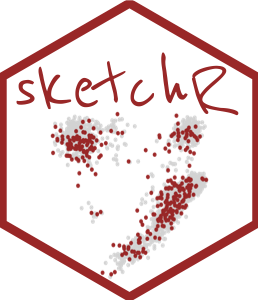
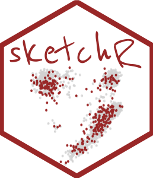

Resources


 


R packages
I am a maintainer or contributor of the following R packages:


- A package for generation of QC reports summarizing the output from an alevin run. Reports can be generated as html or pdf files, or as shiny applications.


- A package providing extensive functionality for comparing results obtained by different methods for differential expression analysis of RNAseq data. It also contains functions for simulating count data and interfaces to several packages for performing the differential expression analysis.


- countsimQC provides functionality to create a comprehensive report comparing a broad range of characteristics across a collection of count matrices. One important use case is the comparison of one or more synthetic count matrices to a real count matrix, possibly the one underlying the simulations. However, any collection of count matrices can be compared.

- Convenience functions for evaluation and comparison of reduced dimension representations.


- Exon-intron split analysis (EISA) uses ordinary RNA-seq data to measure changes in mature RNA and pre-mRNA reads across different experimental conditions to quantify transcriptional and post-transcriptional regulation of gene expression.


- Interactive interface for exploring design matrices in R.


- iCOBRA provides functions for calculation and visualization of performance metrics for evaluation of ranking and binary classification (assignment) methods. It also contains a shiny application for interactive exploration of results.


- iSEE provides functions for creating an interactive Shiny-based graphical user interface for exploring data stored in SummarizedExperiment objects, including row- and column-level metadata. Particular attention is given to single-cell data in a SingleCellExperiment object with visualization of dimensionality reduction results.


- iSEEu (the iSEE universe) contains diverse functionality to extend the usage of the iSEE package, including additional classes for the panels, or modes allowing easy configuration of iSEE applications.

- Calculates JCC scores, which are aimed at detecting genes for which estimated transcript abundances are unreliable, either because of problems in the transcript abundance estimation or because of missing or wrongly annotated reference transcripts. It does so by comparing the number of reads predicted to align across each junction, inferred from the transcript abundances and a fragment bias model, to the observed number of junction-spanning reads, obtained via alignment of the reads to the genome. A high JCC score for a gene indicates that the estimated abundances for the corresponding transcripts are unreliable and should be treated with care in downstream analyses.


- An R interface to the HISAT2 spliced short-read aligner by Kim et al. (2015). The package contains wrapper functions to create a genome index and to perform the read alignment to the generated index.


- Provides Bioconductor-friendly wrappers for RNA velocity calculations in single-cell RNA-seq data.
Other resources

- A lightweight Snakemake workflow for preprocessing and statistical analysis of RNA-seq data.

- A repository with consistently quantified single-cell RNA-seq data sets.

- An R package interface to processed 10x (droplet) and SmartSeq2 (on FACS-sorted cells) single-cell RNA-seq data from the Tabula Muris Senis project.

- An R package interface to processed 10x (droplet) and SmartSeq2 (on FACS-sorted cells) single-cell RNA-seq data from the Tabula Muris consortium.

- Data sets and clustering results from the scRNA-seq clustering evaluation by Duo et al. 2018.